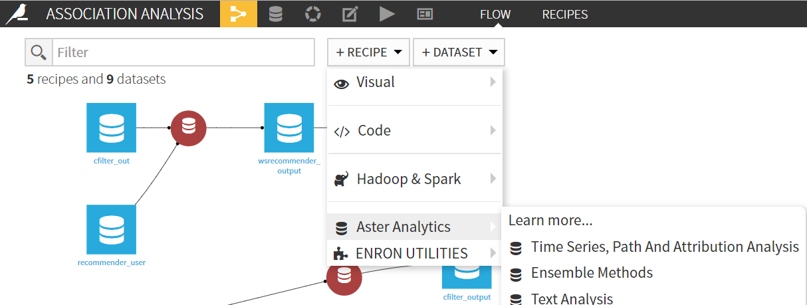
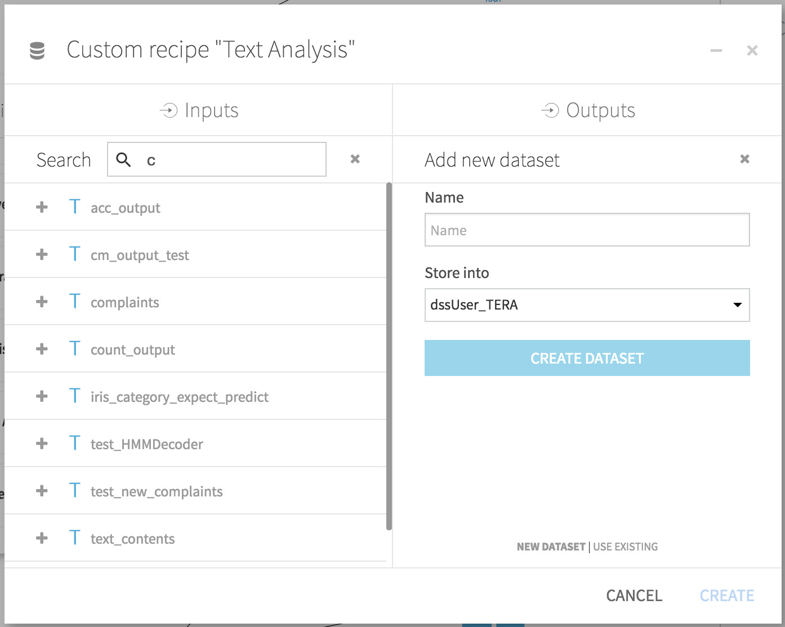

V. Using the Teradata Vantage Analytic Functions Plugin
Usage
This section assumes that a Dataiku DSS project already exists, and input datasets have already been imported. Note that recipes need a non-empty dataset as input to run.
Go to the flow view of the Dataiku project, where the recipe is to be created, by clicking on the [
GO TO FLOW] button or by clicking on the flow icon in the project menu.
In the Flow view, click on the [
+RECIPE] button, then select the [Teradata Vantage Analytic Functions Plugin] and further desired the recipe.
The available recipe names correspond to the different categories of Teradata Vantage Analytic Functions. 
In the [
New custom recipe] popup, specify the input and output datasets. There can be more than one input dataset, as in the case of multiple-input analytic functions. The same is also the case for MLE Functions with multiple output datasets. The output dataset will be stored in the database and schema corresponding to the connection selected in the [Store into] field. Click on [CREATE DATASET] button when done.
In the recipe settings, one can select the most suitable function for the manipulation or analysis of the input dataset. Configure the chosen analytic recipe by specifying parameters such as the input tables, partition and order attributes, and arguments. A recipe's required and optional fields are separated into different tabs.

The [
SQL Clauses] tab allows the user to explicitly modify the query to be executed.
The field next to "Modify Select Columns of Output Query" enables the user to modify the SELECT clause of the query. The field next to "Additional Clauses" enables the user to append additional SQL clauses to the query such as WHERE, ORDER BY, GROUP BY, and other similar clauses. These fields have equivalent effects as if the query were modified as:
SELECT {modified select} FROM function_name(
...
)
{additional clauses}
Click on the [
RUN] button or save the recipe settings for later use.
Usage Notes
Functions with multiple output datasets will normally require an output dataset for the functions' output message/result alongside any other output tables/datasets specified in the recipe. Please note that the output dataset/s name/s should also match the name within the recipe's settings.